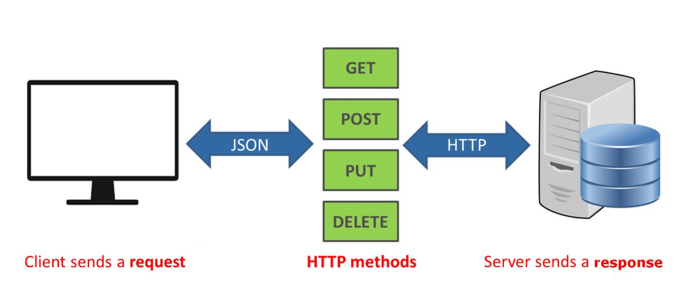

서버에 요청을 보낼 때는 주소를 통해 요청의 내용을 표현한다. 요청이 항상 html 파일을 요구할 필요는 없다. 다양한 응답을 요구하는 요청이 주소를 통해 들어가므로, 서버가 이해하기 쉬운 주소를 사용하는 것이 바람직하다.
여기서 REST API가 등장한다.
REST API 는 REpresentational State Transfer의 약어이다. 네트워크 구조의 한 형식으로, 서버의 자원을 정의하고, 자원에 대한 주소를 지정하는 방법을 의미한다.
주소는 의미를 명확히 전달하기 위해 주로 명사로 구성된다. 가령 주소가 /user 이면 사용자 정보에 대한 자원을 요청하는 것이고, /post라면 게시글에 관련된 자원을 요청하는 것이라고 추측할 수 있다.
REST API는 주소 외에도 HTTP 요청 메소드라는 것을 사용한다. HTTP 요청 메소드로는 아래와 같은 것들이 있다.
HTTP 프로토콜을 기반으로 REST API를 사용하면 클라이언트가 누구든 상관없이 서버와 소통할 수 있다. 모바일, 웹 환경을 굳이 가리지 않는다. 즉 서버와 클라이언트가 분리되어 있음을 의미한다. REST API를 따르는 서버를 RESTful하다고 표현하는 경우가 많다.
클라이언트가 서버에 요청을 보낼 때 특정 URL을 보내는 경우가 있는데(REST API), 그러면 서버에서는 해당 URL에 맞는 적절한 응답을 클라이언트로 보내준다. 특정 URL에 따라 서버가 응답을 처리하는 작업을 라우팅 작업이라고 한다. 서버에서는 이러한 라우팅 작업을 적절하게 처리해 줄 수 있어야 한다.